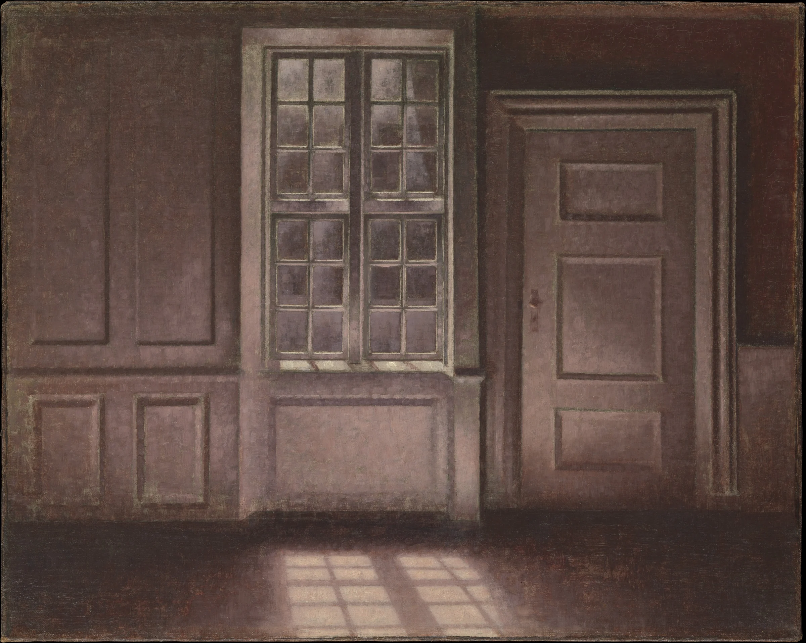
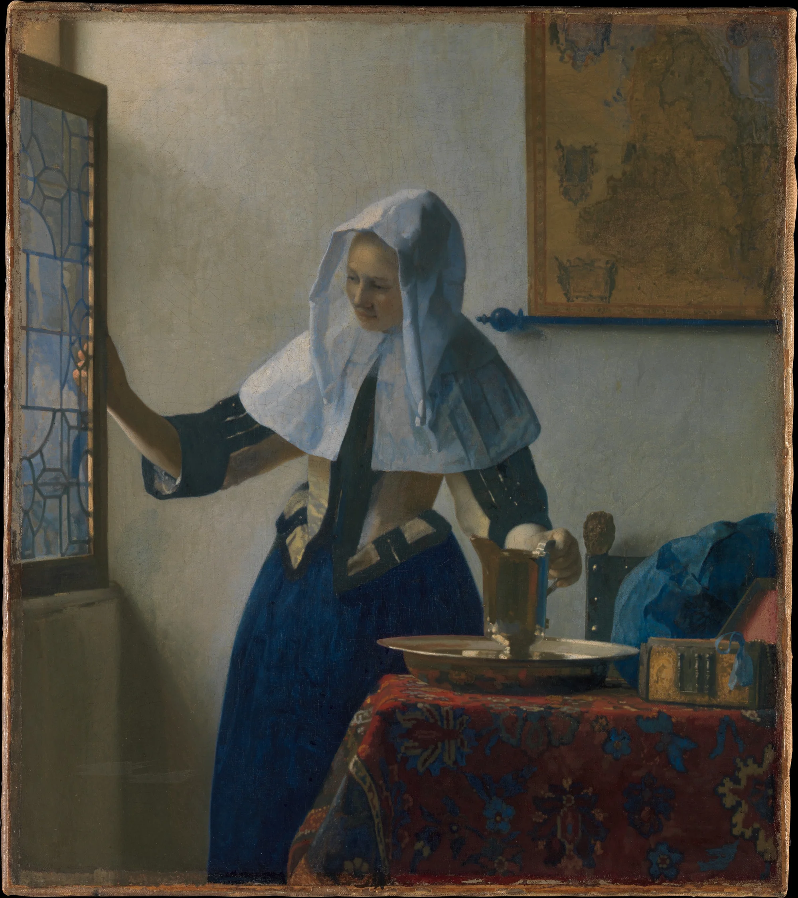

The Shape of a Room’s Light
On panes, lattices and leaves, and what the sun keeps of each on its way to the floor.
Every patch of sunlight on a floor is a picture of the window it came through. The panes are there, and the glazing bars between them, and the sill, all leaning the same way and stretched long by the lowness of the sun. You can read the hour from it the way you read a sundial: in the morning it lies short and close to the wall, by late afternoon it has crept out across the boards and turned to the colour of honey.
But it is never quite a copy. Look along a patch from the wall outward and its edges change. Where the light has only just passed the sill they are sharp enough to cut paper. Further out, where it has travelled a long way from the top of the window, they go soft, as if drawn in chalk and then brushed with a sleeve.
Half a degree
The reason is the sun itself, which is not a point but a disc, a little over half a degree across. Every edge of a window casts not one shadow but a whole fan of them, one from each part of that disc, and the fan widens with distance. Near the sill the fan has had no room to open. A couple of metres out it has spread by about two centimetres, and the edge you see is that spread: the penumbra, the place where part of the sun is hidden and part is not.
This is why the thin bars of a sash window throw crisp lines close to the wall and almost nothing further out. A bar narrower than the penumbra cannot hide the whole sun from anywhere; its shadow thins to a faint grey seam and then disappears, while the heavy meeting rail in the middle holds on for much longer.

Vilhelm Hammershøi painted the rooms of his flat at Strandgade 30 in Copenhagen for more than a decade, and again and again he painted this: a window, a door, and the window set down on the floor as a skewed grid of pale light. He left out almost everything else. The furniture went, then most of the people. What stayed was the light keeping its appointment with the boards.
Vermeer’s rooms are lit almost always from the left, through tall leaded casements that we see only in part. He paints what the light does once it is inside: how it lies along a sleeve, a brass basin, a map on the wall, and how the far side of the room falls away into a cool, blue-grey shade. The window is the source of everything and is barely shown.
A shadow keeps the shape of what cast it only as far as the sun allows.
Glass, stone and leaves
Roman glaziers cast their panes in flat moulds, and the glass came out thick, faintly green and full of small bubbles; it let in light rather than a view. The Pantheon needed no glass at all. Its oculus, some nine metres across, throws a single great disc of sun onto the coffers of the dome, and through the day that disc walks slowly round the inside of the building like the hand of a clock.

In the hot cities of India and the Islamic world the window was often stone, carved through into a jali: a screen of interlocking stars and polygons that keeps out the glare and the eyes of the street and lets the air move. The light that comes through a jali is the pattern itself, printed across the floor in stars. Close to the screen each star is perfect. Further out the points blunt and fill, and the farthest stars become simple round spots of light.
Those round spots are the same thing that happens under a tree. A gap between leaves is a pinhole, and a pinhole makes a picture of whatever is bright beyond it, which on a clear day is the sun. So the dapples on a path in summer are not leaf-shaped at all. They are dozens of small round suns, stretched into ovals when the sun is low, overlapping where the canopy is thin, trembling when the wind moves the branches. A text attributed to Aristotle already asks why sunlight through a square hole makes a round patch, and during an eclipse every one of those suns becomes a crescent.
Thin cloud changes all of it at once. The light dims, but it also softens: the sun’s disc swells into a bright haze, every penumbra widens, the jali’s stars round off and the dapples blur into one another. Then the cloud passes, the edges come back, and the room is exactly as it was.
Fin